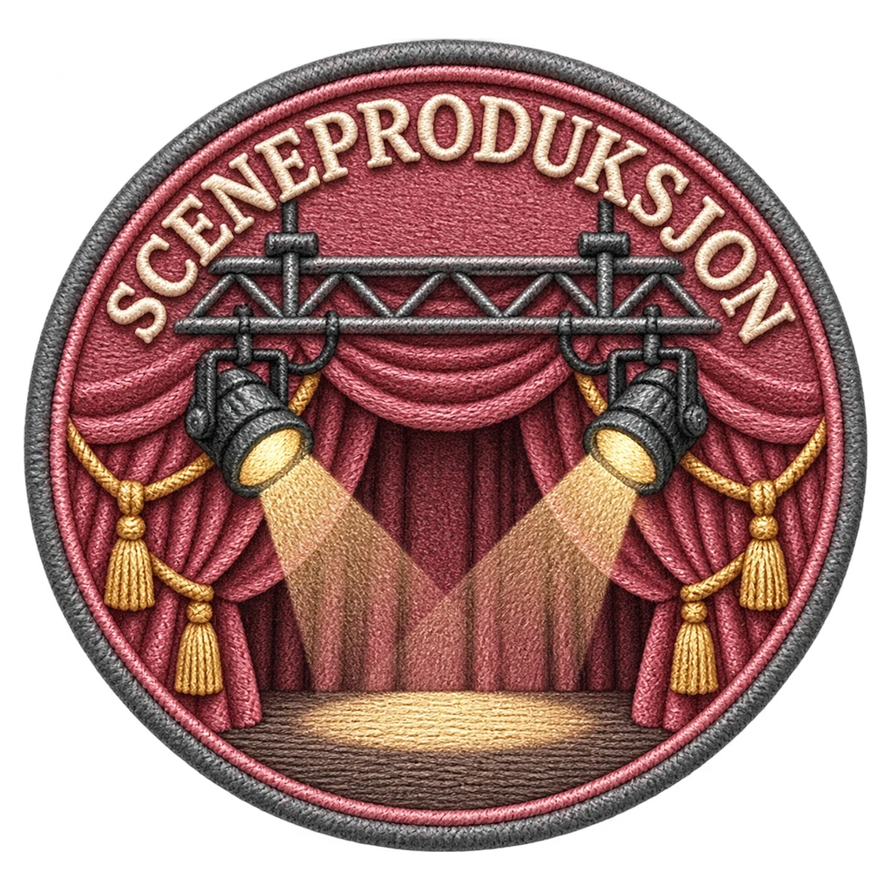
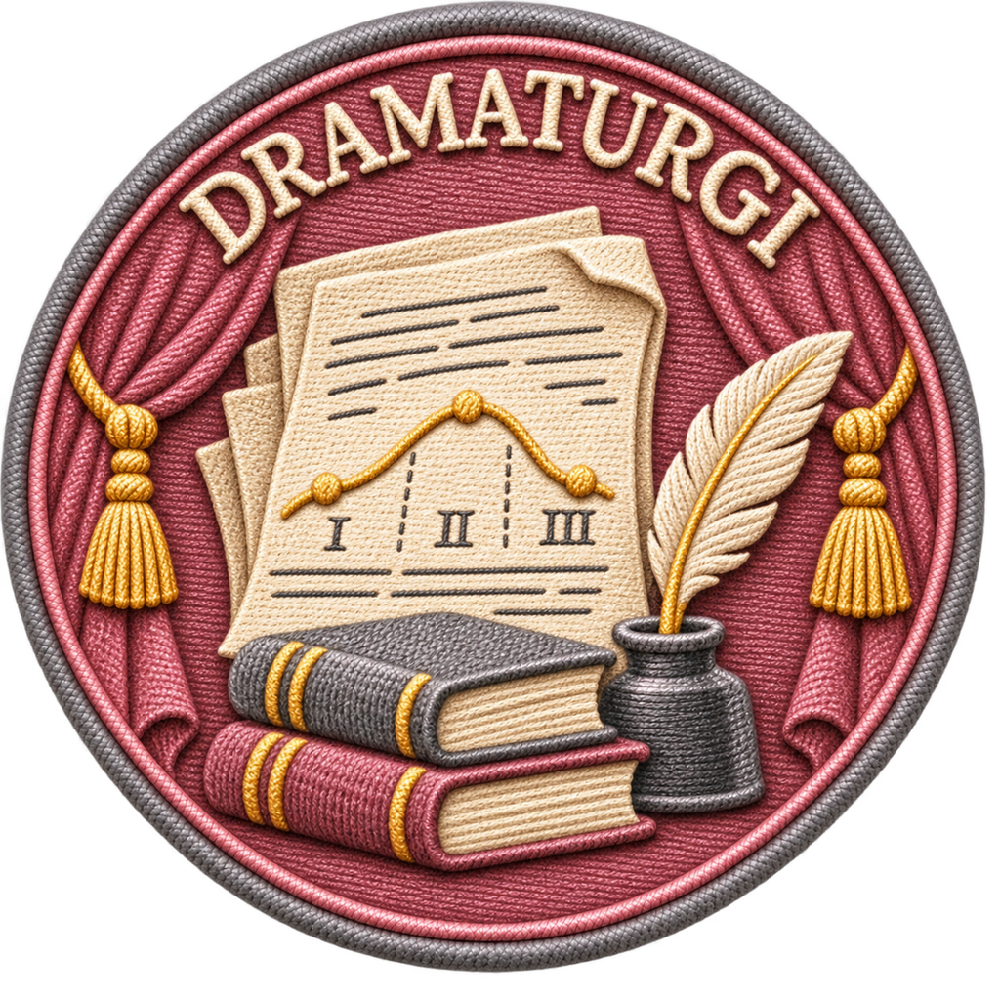
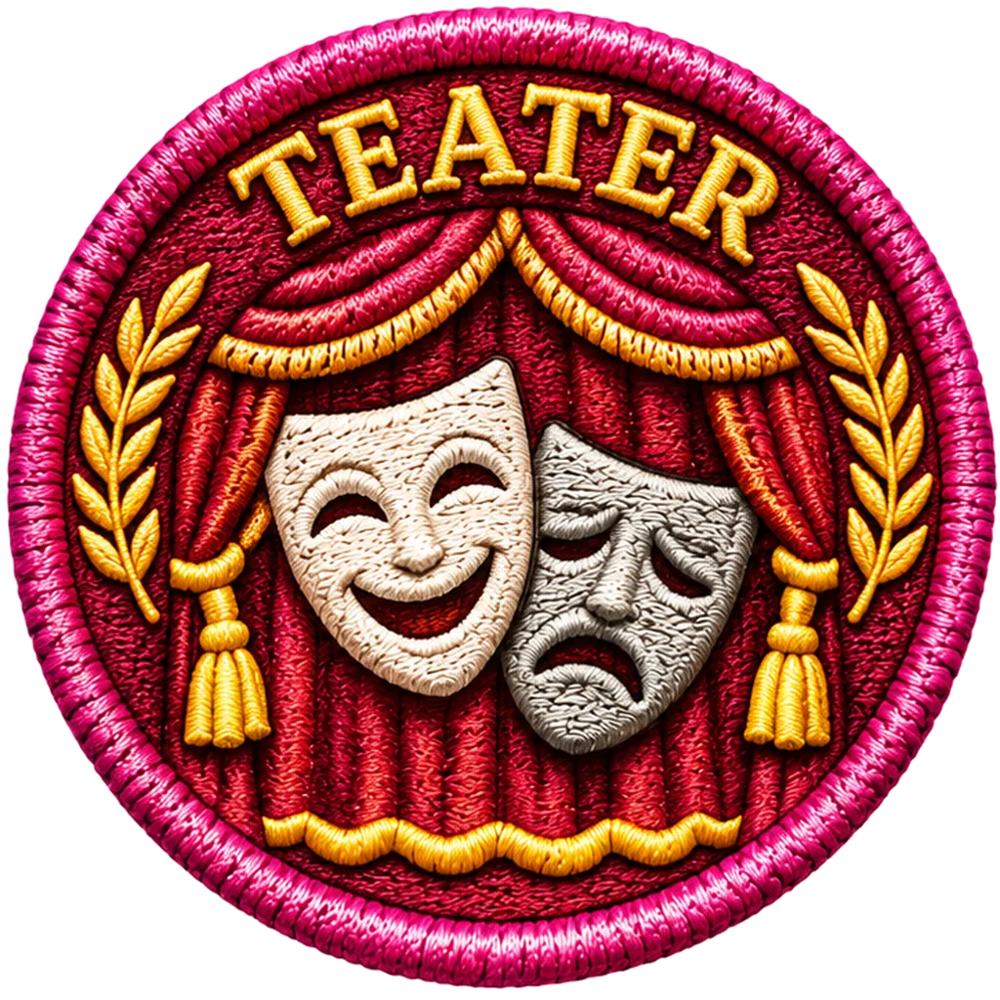
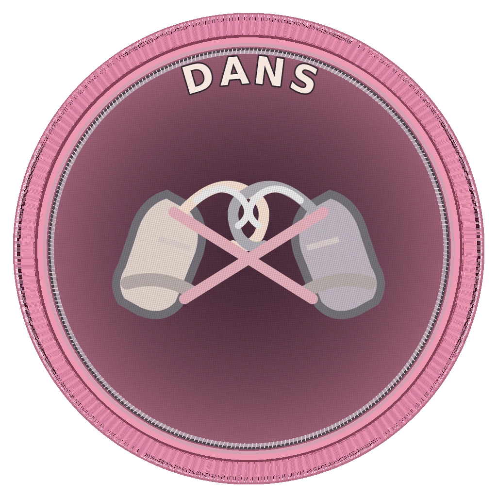
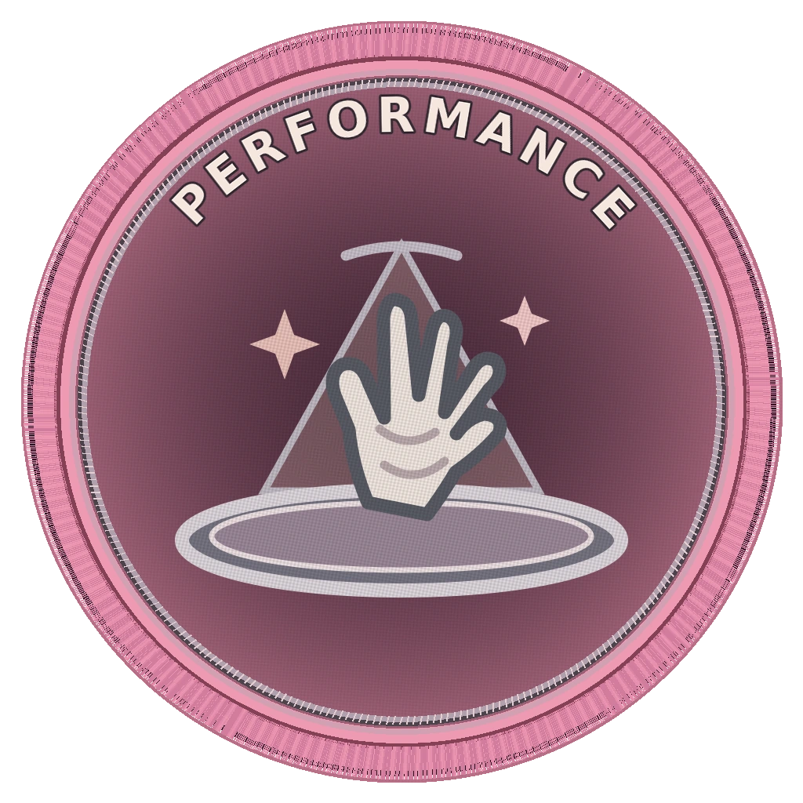
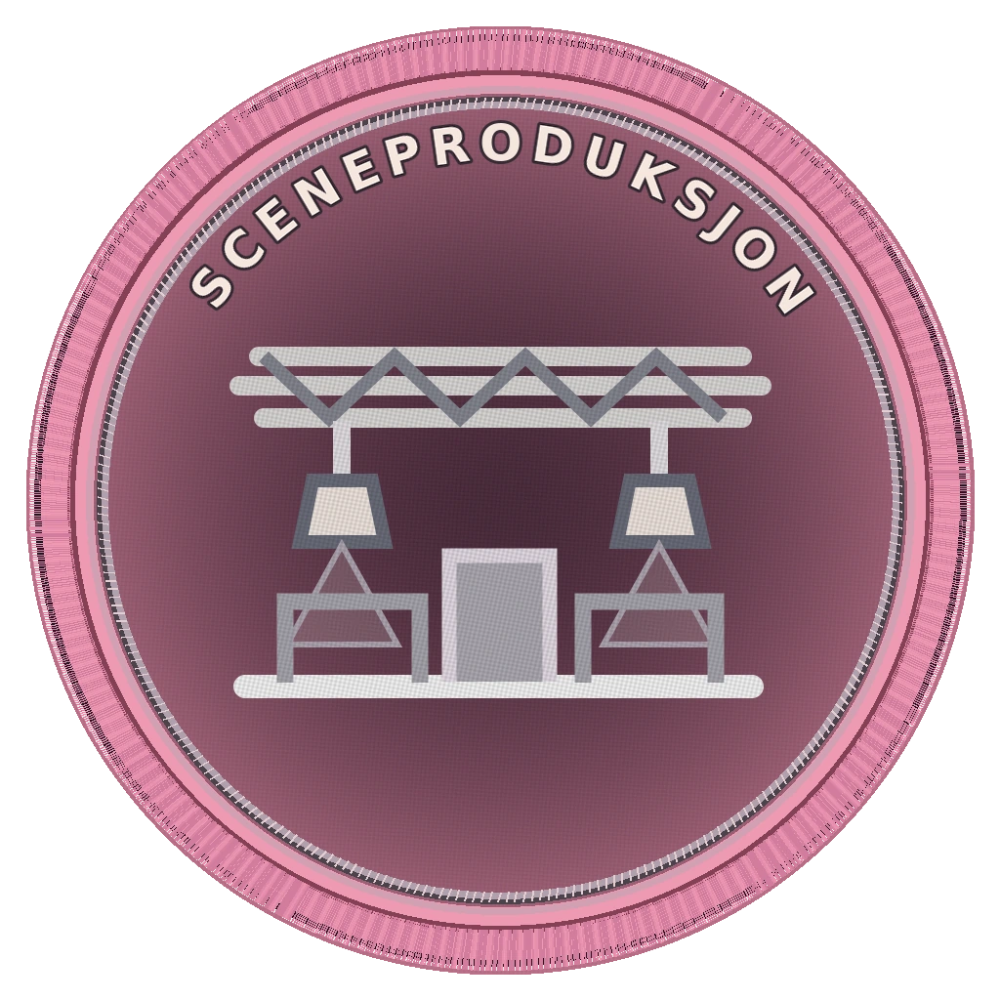
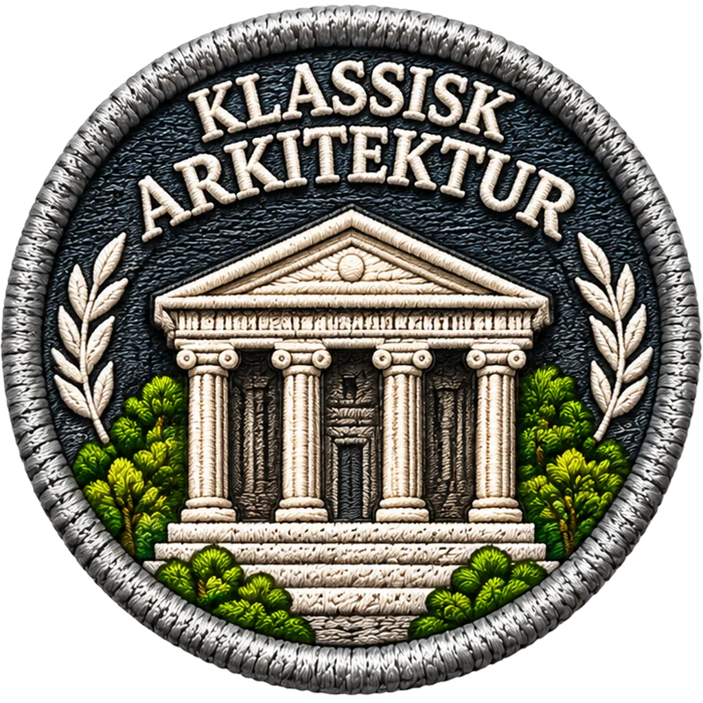

History Go – Scenekunst og undermerker, bolk 01
Tre Scenekunst v3-merker er nå aktivert i History Go. Øvrige kandidater er ikke aktivert.
Tre nye Scenekunst-kandidater – v3
Disse tre WebP-filene er aktivert i main med 1024 × 1024 oppløsning, transparent bakgrunn og kontrollert SHA-256.

Sceneproduksjon v3
scenekunst · Godkjent – aktiv
Rigg, lys og sceneteppe · Aktiv i ScenekunstRegi v3
scenekunst · Godkjent – aktiv
Sceneregi og skuespillerplassering · Aktiv i Scenekunst
Dramaturgi v3
scenekunst · Godkjent – aktiv
Manus og tre-aktskurve · Aktiv i ScenekunstOpprinnelige v1-bilder – historisk sammenligning
Dette er de ni opprinnelige kandidatene. Åtte v1-bilder ble avvist; Klassisk arkitektur avventer vurdering. At v1 vises her betyr ikke at v1 er godkjent eller aktivert.

Teater
scenekunst · Må tegnes om
Gjentar hovedmerkemotiv – ikke aktiv
Dans
scenekunst · Må tegnes om
Visuell kvalitet avvist – ikke aktiv
Performance
scenekunst · Må tegnes om
Visuell kvalitet avvist – ikke aktivMusikkteater
scenekunst · Må tegnes om
Visuell kvalitet avvist – ikke aktiv
Sceneproduksjon
scenekunst · Må tegnes om
Visuell kvalitet avvist – ikke aktivRegi
scenekunst · Må tegnes om
Visuell kvalitet avvist – ikke aktivDramaturgi
scenekunst · Må tegnes om
Visuell kvalitet avvist – ikke aktiv
Klassisk arkitektur
by · Kandidat
Visuell godkjenning gjenstårSpillefilm
film_tv · Må tegnes om
Gjentar hovedmerkemotiv – ikke aktivOriginalbilder for 19 hovedmerker og 15 godkjente Religion-/Vitenskap-undermerker er ikke endret. Sammenlign med hovedmerkene.